Затвор
Ф03а · выдержка · КПД · типы
матрица — следующая пара
Элементы ЦФК

Затвор ограничивает время экспонирования
Затвор
Устройство, ограничивающее продолжительность действия света на светочувствительный слой (матрицу). Задаёт выдержку.
Когда пластины экспонировали часами, роль затвора выполняла крышка объектива
Выдержка t
Интервал, пока свет экспонирует участок приёмника. На диске часто знаменатель: 2000 = 1/2000 с.
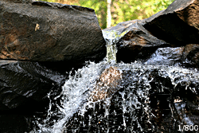
Ряд выдержек
1 · 1/2 · 1/4 · 1/8 · 1/15 · 1/30 · 1/60 · 1/125 · 1/250 · 1/500 · 1/1000… Соседние ≈ ×2 по свету.
B (Bulb) — от руки.
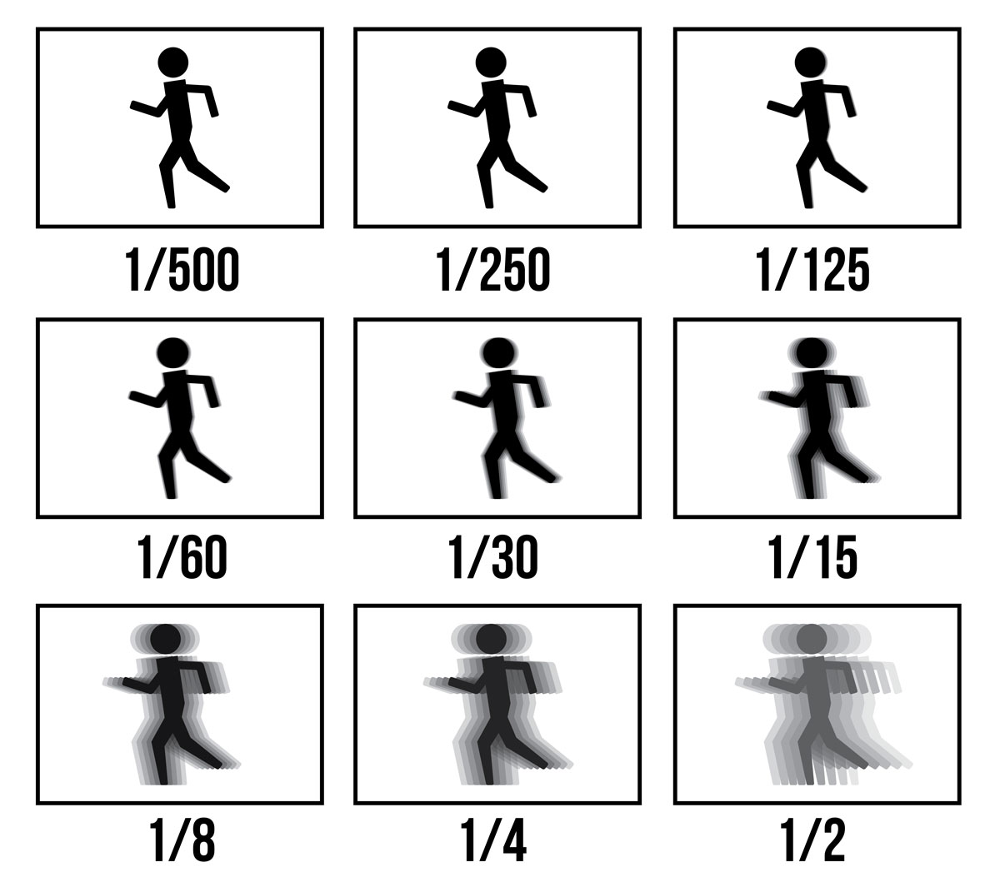
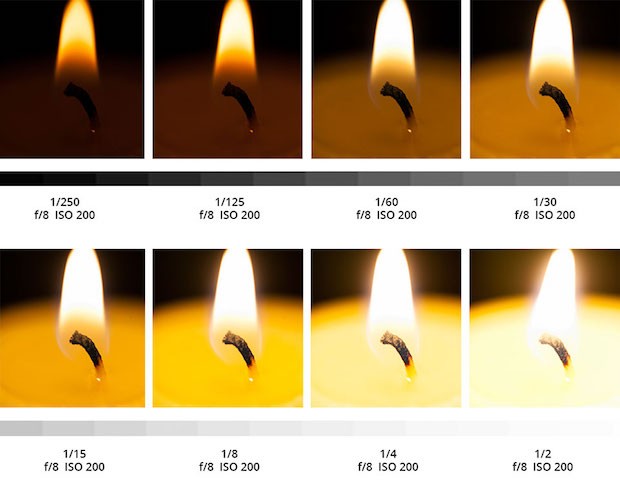
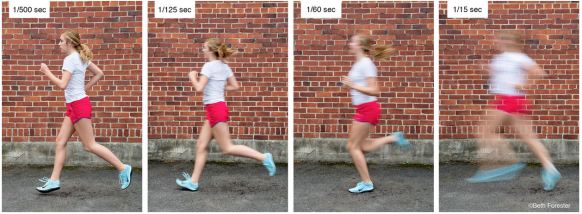
Характеристики затворов
- КПД — отношение эффективной выдержки к полной (ГОСТ 19821-83)
- точность и диапазон выдержек
- степень искажения изображения
- надёжность в разных условиях
КПД = tэфф / tполнцентральный на коротких падает · щелевой обычно выше
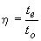
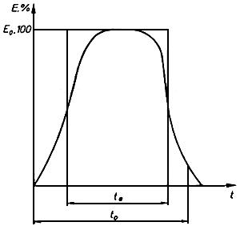
Где стоит
- Фокальные — у кадрового окна
- Апертурные: межлинзовые, залинзовые, фронтальные
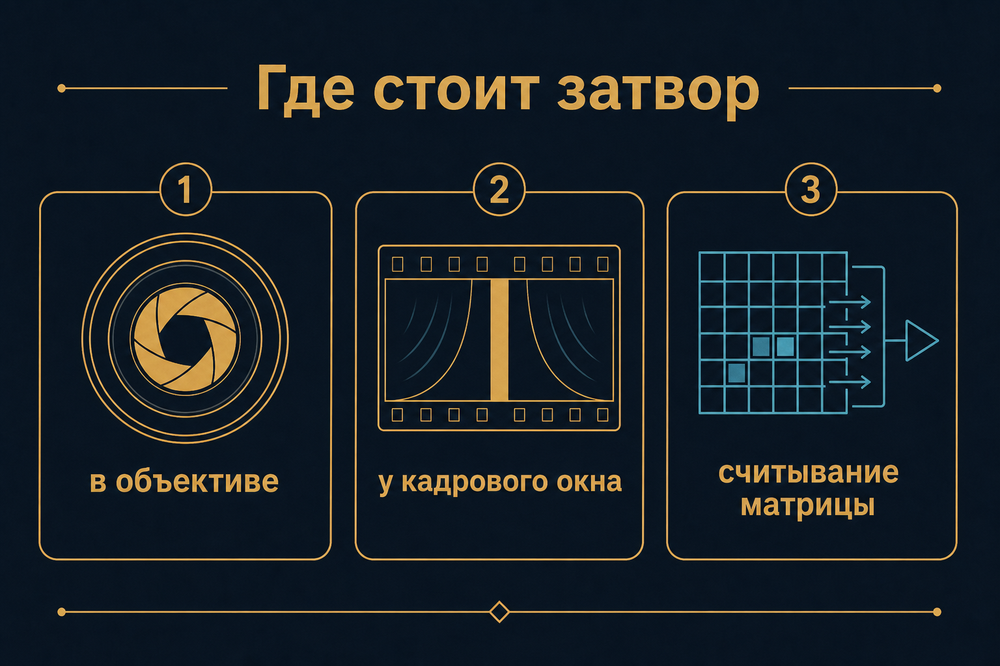
Классификация
Пропускание света
- центральные
- шторные / шторно-щелевые / ламельные
Принцип
- механические
- электронные
- электронно-механические
- ЖК
Центральный
- Весь кадр сразу · мало искажений · вспышка в любой момент
- Термоустойчивость
- Короткие выдержки ограничены (ориентир 1/500…1/4000)
- КПД на коротких падает: лепестки ещё едут
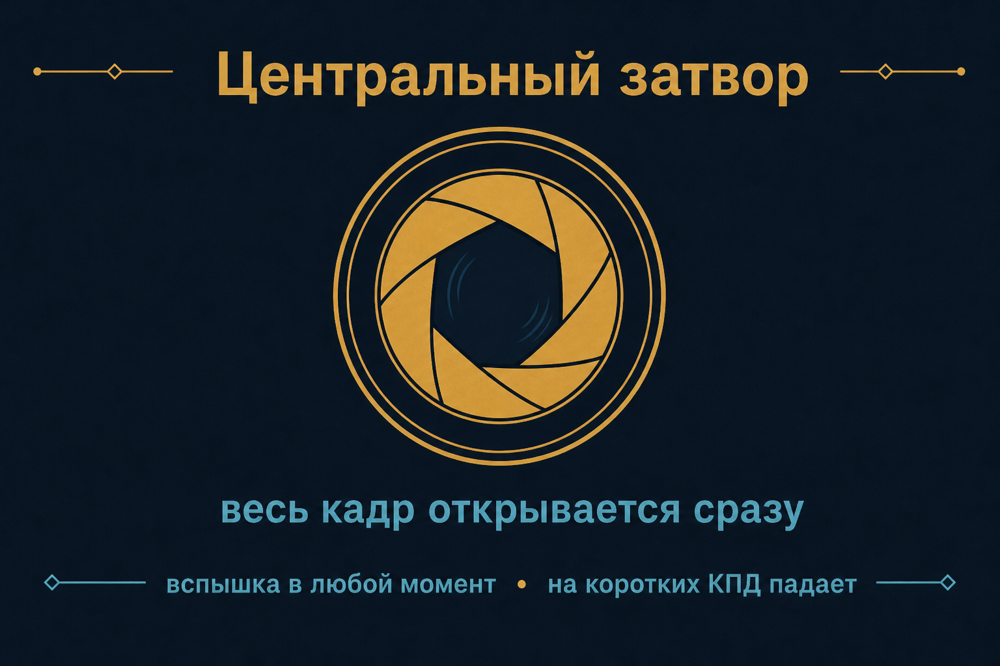
Шторно-щелевой затвор
Две шторки у кадрового окна. На коротких выдержках кадр не открыт целиком: вторая шторка стартует, пока первая ещё едет. Экспонирует узкая щель, бегущая по кадру. Время для точки — номинальная выдержка; время пробежать кадр — больше.
Следствия щели
- до ~1/8000 с
- быстро едущий объект наклоняется (пропеллер, поезд)
- вспышка короче пробега щели — освещена только полоса
- при АФС строки — разные моменты: снимок ближе к сканерному
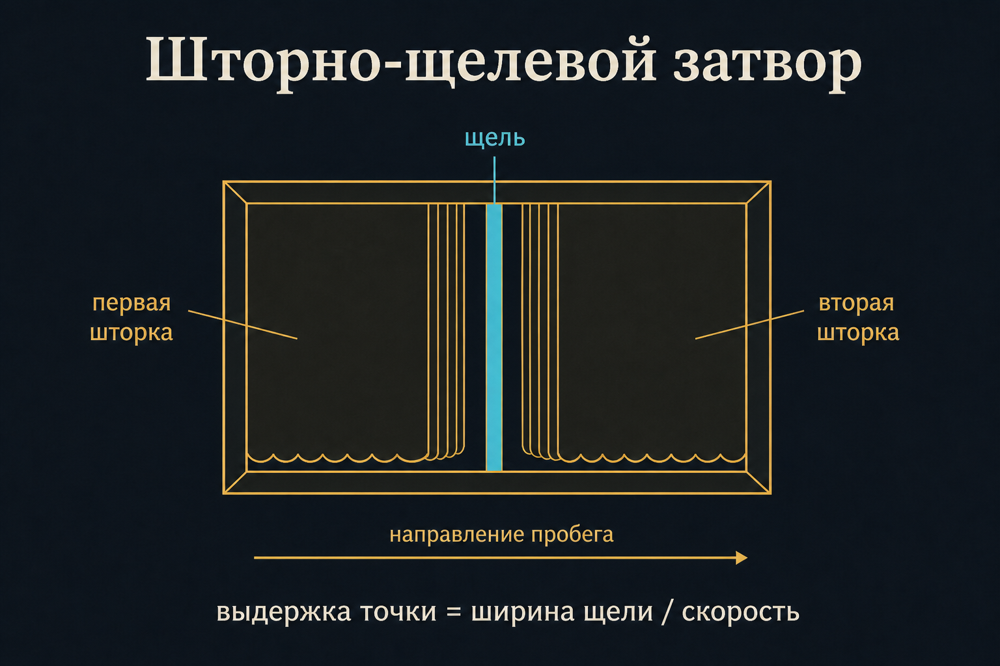
Живая схема: глобальный и щель
Электронно-механический (EFCS)
Электронная передняя шторка, механическая задняя. Меньше вибрация и износ. На очень коротких — ошибки экспозиции по полю.
Электронный скользящий затвор
Бесшумный, не изнашивается, до 1/32 000 с. Строки по очереди — тот же класс искажений, что у щели.
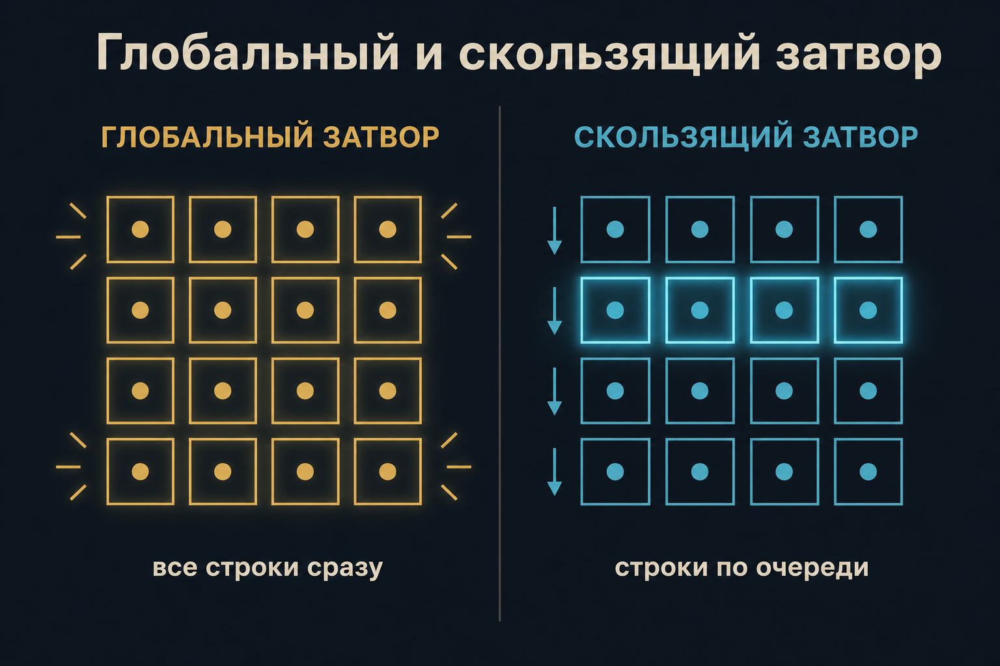
Электронный глобальный затвор
Все пиксели начинают и кончают экспозицию вместе. Геометрия кадра честная: это кадровый снимок в смысле ГОСТ. На КМОП дорого и шумно относительно rolling.
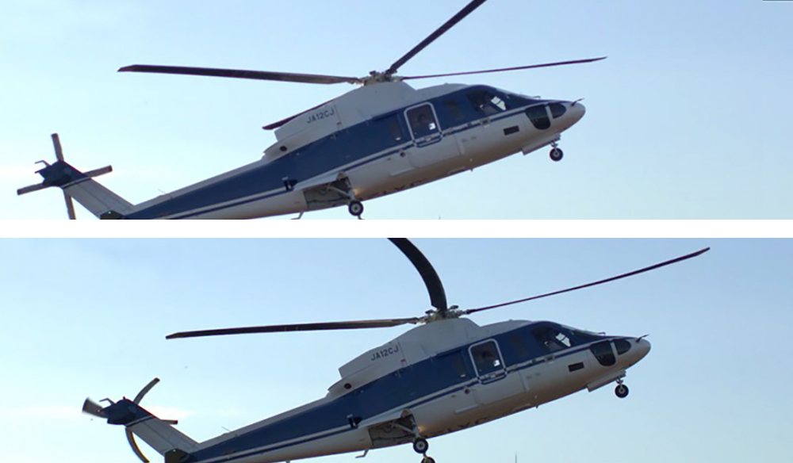
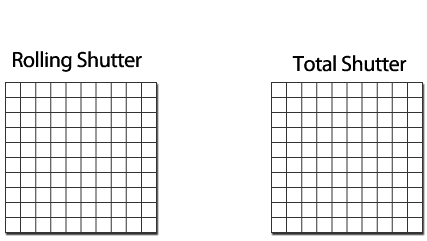
С доски
- Что это и какую функцию выполняет?
- Какие виды бывают?
- Какие параметры важны?
- На что влияет выдержка?
- Выдержка точки vs время пробега шторок?